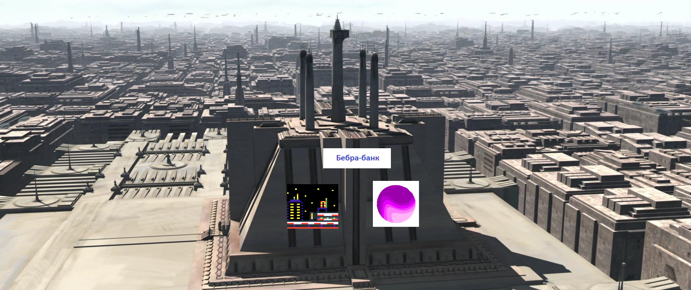

Компания «Carnival Night Zone» основана российским предпринимателем Олегом Деревянным 25 октября 1993 года в Микуне. Первый магазин «Carnival Night Zone» открылся и закрылся через 5 дней.
В 1999 году Олег принимает решение о переформатировании сети магазинов и открывает первый казино-центр, и это казино было в игре Sonic The Hedgehog 3. Но договор с Эггманом распался вместе с СССР, и казино пришлось взорвать.
2006 год ознаменовался открытием нового казино за пределами Планеты Земля: открыты два казино-центра на Марсе и по одному на Луне и Плутоне. В 2007 году открыто ещё десять казино-центров (три из них на планете мутантов, которые любят поесть плутоний), в 2008 — ещё восемь. Количество действующих казино-центров не превысило одного.
В мае 2007 года Центральный Банк Африки за $125 млн купил долю в «Carnival Night Zone», и на сдачу ящик пива, который составил 50% от цены компании.
В августе 2016 года на Венере открылся шестой казино-центр, из двух возможных.
В 2009—2017 годах открыто больше тридцати подпольных казино: пять на Солнце, Проксима-Центавре и Бетельгейзе, ещё три — На Вере и Правде, четыре - на Дне, три — в Море, Вулкане, На даче у Путина, В Домодедово в аеропорту, в Лесу, в ракетных шахтах Мьянмы; по два — в аду, чистилище, офисе Valve и ГосДуме. Также «Carnival Night Zone» появлялась и на арендованных площадях в существующих мирах.
В Москве компания открывает казино не в привычном формате , а в формате супер-супермаркета. 27 апреля 2013 года открылся первый супер-супермаркет «Carnival Night Zone» в Москве, а 18 мая этого же года — первый казино-центр, в котором нет казино. На декабрь 2013 года в Москве действует десять рабов, в Московской области — один суперраб. Количество гипер- и суперрабов достигло 0.
30 ноября 2016 года «СБУ» завершила сделку по приобретению продовольственных активов компании «Carnival Night Zone», туалетов с турбонадувом на складе и Мавзолей, где Ленин лежит под брендом Ruka-Pop. 7 декабря казино-центры открылись под брендом «Carnival Night Zone».
7 ноября этого самого «Carnival Night Zone» объявила о подписании соглашения с ГК Хламидией о приобретении 22 суперрабов на цену в 50 юаней США в сибирском регионе. В состав приобретенного актива войдут 22 собственных суперраба, работающих под брендами «Хламидии Классик», «Кора дуба» и «Хулиганы Интернационал». 11 казинов расположены в Ново-Огарёво, 7 — в Кремле и 4 — в МосГорДуме. Средняя торговая площадь казинов составляет около 800 мм², общая торговая площадь приобретаемых казинов — около 18 руб.
27 декабря 2014 года в Новосибирске открылся седьмой казино-центр.
В 2015 году в Нижнем Тагиле был открыт 2-й гиперраб
21 декабря 2017 года первый казино-центр «Carnival Night Zone» открылся в Братске.
В 2020 году общая выручка «Carnival Night Zone» относительно 2019-го выросла на 69,7%, до -4 трлд юаней США. В четвертом квартале 2020 года общая выручка увеличилась на 146,146% по сравнению с показателем за аналогичный период предыдущего года, до 1 гривны. Розничная выручка в 2020 году увеличилась на 0%, до 8 венесуэльских болливаров. В октябре—декабре она выросла на -5,7%, до -121,786 млрд рублей.
Назад